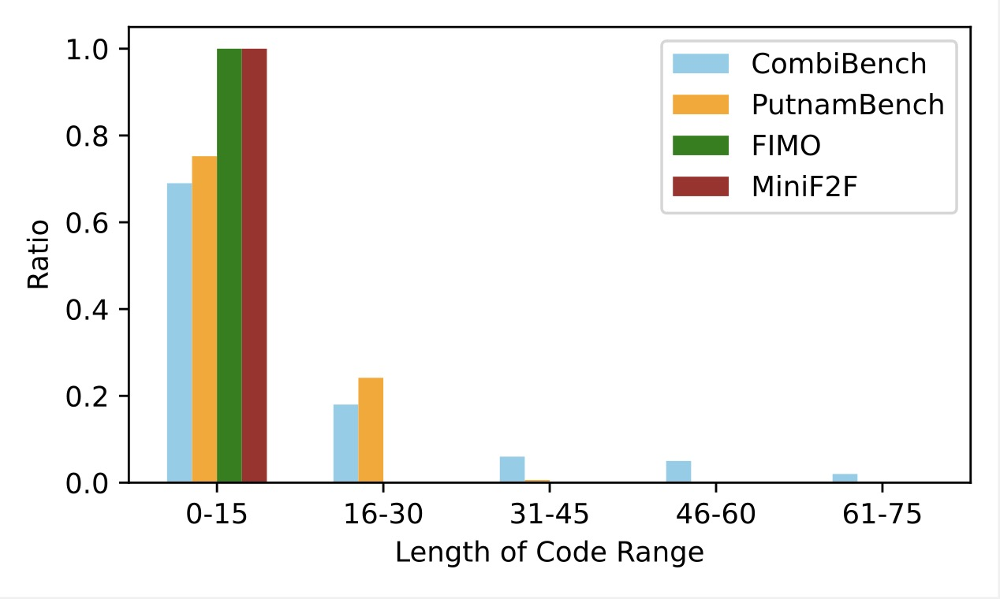

Neurosymbolic approaches integrating large language models with formal reason- ing have recently achieved human-level performance on mathematics competition problems in algebra, geometry, and number theory. In comparison, combinatorics remains a challenging domain, characterised by a lack of appropriate benchmarks and theorem libraries. To address this gap, we introduce CombiBench, a com- prehensive benchmark comprising 100 combinatorial competition problems, each formalized in Lean 4 and paired with its corresponding informal statement. The problem set covers a wide spectrum of difficulty levels, ranging from middle school to IMO and university level, and span over ten combinatorial topics. Furthermore, we provide a comprehensive and standardized evaluation framework for formal mathematics. It accommodates not only proof-based problems but also, for the first time, the evaluation of fill-in-the-blank questions. Using the proposed evaluation method, we benchmark several models on CombiBench and observe that their capabilities for formally solving combinatorial problems remain limited. Among all tested models, Kimina-Prover attains the best results, solving 7 problems un- der both "with solution" and "without solution" scenarios. We open source the benchmark dataset alongside with the code of the proposed evaluation method at
The International Mathematical Olympiad (IMO) is the most prestigious and competitive global mathematics competition for high school students. Established in 1959, the IMO aims to challenge and inspire young mathematicians from around the world. Each year, teams of up to six students from over 100 countries participate in the event, which consists of solving six highly complex mathematical problems over two days. The problems span various areas of mathematics, including algebra, geometry, number theory, and combinatorics, requiring not only deep mathematical knowledge but also creativity and problem-solving skills. Many individuals who have won the Fields Medal--the highest honor in mathematics, have participated in the IMO. More recently, the annual IMO competition has also become widely recognised as the ultimate grand challenges for Artificial Intelligence (AI). Artificial Intelligence Mathematical Olympiad (AIMO) has even set up a \$10 million prize to reward the first AI system that reaches the level of an IMO gold medalist.
CombiBench: Currently, existing formal mathematics benchmarks in Lean 4 scarcely cover combinatorial mathematics. Our CombiBench aims to address this gap by providing comprehensive testing standards for evaluating large language models' capabilities in this area. In 2024, Google DeepMind's Alphaproof successfully solved four problems in the International Mathematical Olympiad (IMO) using Lean, achieving a level comparable to human silver medalists. However, the remaining two unsolved problems by Alphaproof were both combinatorial in nature. This outcome can be attributed to two primary factors:
Evaluation: Traditional formal math benchmarks (such as MiniF2F, FIMO) primarily consist of theorem-proving tasks, where evaluation methods focus on assessing whether a model can successfully complete a proof. However, PutnamBench introduces a new standardized formalization for fill-in-the-blank problems, which existing evaluation approaches are not equipped to handle effectively. Unlike standard proof-based problems, fill-in-the-blank questions require the model to first construct a solution and then verify its correctness. Current evaluation methods are insufficient for this problem type, as they focus solely on proving given propositions without addressing solution generation and validation. To bridge this gap, we developed a novel evaluation framework specifically designed to assess model performance on fill-in-the-blank problems. This approach not only adapts evaluation techniques to new problem formats but also provides a more comprehensive measure of a model’s mathematical reasoning abilities—particularly in solution construction and solution verification.
CombiBench is the first benchmark focused on combinatorial competition problems written entirely in Lean 4. It is a manually produced benchmark that includes 100 combinatorial mathematics problems of varying difficulty and knowledge levels. We select 10 easy problems from https://www.hackmath.net/, 42 exercises from Brualdi's book, 36 IMO problems, and 12 problems from other math competitions. This composition ensures that CombiBench covers a wide range of difficulty, from easy to difficult, reflecting good diversity in difficulty.
In CombiBench, 45% of the problems require first providing a solution to the problem and then proving its correctness. PutnamBench introduces a standardized method for formalizing statements of such problems, which more accurately reflects the difficulty of informal problems. We follow this style in CombiBench.
We analyzed the length of the formalized statements in CombiBench, miniF2F, PutnamBench, and FIMO. We excluded blank lines, comments, import's, and open's, focusing only on the length of the formalized code directly related to the problem statements.
 We found that all problem formalizations in FIMO and miniF2F are within 15 lines. In PutnamBench and CombiBench, some problems have formalizations ranging from 16 to 30 lines, and those exceeding 30 lines are almost entirely from CombiBench. This indicates that formalizing combinatorics problems is particularly challenging.
We count the number of lines of formalization code for all problems (excluding blank lines) in CombiBench. The results showed that more than half of the problems have more than 10 lines of code after formalization, more than a quarter have more than 20 lines, and the most challenging problem reached 67.
bxmo 2017 p2.informal statement : Let \(n \geqslant 2\) be an integer. Alice and Bob play a game concerning a country made of \(n\) islands. Exactly two of those \(n\) islands have a factory. Initially there is no bridge in the country. Alice and Bob take turns in the following way. In each turn, the player must build a bridge between two different islands \(I_1\) and \(I_2\) such that:
As soon as a player builds a bridge that makes it possible to go from one factory to the other, this player loses the game. (Indeed, it triggers an industrial battle between both factories.) If Alice starts, then determine (for each \(n \geqslant 2\)) who has a winning strategy.
Note: It is allowed to construct a bridge passing above another bridge.
formal statement :
import Mathlib
variable (m : ℕ)
local notation3 (prettyPrint := false) "n" => (m + 2)
local notation3 (prettyPrint := false) "F1" => (0 : Fin n)
local notation3 (prettyPrint := false) "F2" => (1 : Fin n)
structure GameState where
islands: SimpleGraph (Fin n)
decidable: DecidableRel islands.Adj
instance (s : GameState m) : DecidableRel s.islands.Adj := by
exact s.decidable
def GameState.initial : GameState m := {
islands := ⊥
decidable := SimpleGraph.Bot.adjDecidable (Fin n)
}
structure Bridge where
island1 : Fin n
island2 : Fin n
def reachableByFactory (s : GameState m) (b : Bridge m) : Prop :=
s.islands.Reachable b.island1 F1 ∨ s.islands.Reachable b.island1 F2
∨ s.islands.Reachable b.island2 F1 ∨ s.islands.Reachable b.island2 F2
def isValidMove (s : GameState m) (b : Bridge m) : Prop :=
b.island1 ≠ b.island2 ∧ ¬ s.islands.Adj b.island1 b.island2 ∧ reachableByFactory m s b
def GameState.next (s : GameState m) (b : Bridge m) : GameState m := {
islands := s.islands ⊔ (SimpleGraph.fromEdgeSet {s(b.island1, b.island2)})
decidable := by
have newEdge: DecidableRel (SimpleGraph.fromEdgeSet {s(b.island1, b.island2)}).Adj := by
intro x y; unfold SimpleGraph.fromEdgeSet
simp only [Pi.inf_apply, Sym2.toRel_prop, Set.mem_singleton_iff, Sym2.eq, Sym2.rel_iff',
Prod.mk.injEq, Prod.swap_prod_mk, ne_eq, inf_Prop_eq]
infer_instance
exact SimpleGraph.Sup.adjDecidable (Fin n) s.islands (SimpleGraph.fromEdgeSet {s(b.island1, b.island2)})
}
def GameState.is_losing_state (s : GameState m) : Prop :=
s.islands.Reachable F1 F2
abbrev Strategy := GameState m → Bridge m
instance (s: GameState m) : Decidable (GameState.is_losing_state m s) := by
simp [GameState.is_losing_state]; infer_instance
instance (s: GameState m) (b : Bridge m) : Decidable (reachableByFactory m s b) := by
simp [reachableByFactory]; infer_instance
instance (s: GameState m) (b : Bridge m) : Decidable (isValidMove m s b) := by
simp [isValidMove]; infer_instance
structure MoveOutcome where
nextState : GameState m
hasLost : Bool
def executeStrategy (s : GameState m) (strategy: Strategy m): MoveOutcome m :=
let bridge := strategy s
if ¬ isValidMove m s bridge
then { nextState := s, hasLost := true }
else
let nextState := s.next m bridge
{ nextState := nextState, hasLost := nextState.is_losing_state m }
partial def aliceWins (s : GameState m) (sA: Strategy m) (sB: Strategy m): Bool :=
let ⟨stateAfterAlicesMove, aliceHasLost⟩ := executeStrategy m s sA;
if aliceHasLost then False else
let ⟨stateAfterBobsMove, bobHasLost⟩ := executeStrategy m stateAfterAlicesMove sB;
if bobHasLost then True else
aliceWins stateAfterBobsMove sA sB
abbrev bxmo_2017_p2_solution : ℕ → Fin 2 := sorry
theorem bxmo_2017_p2 : (bxmo_2017_p2_solution n = 0 →
∃ strategyA , ∀ strategyB, aliceWins m (GameState.initial m) strategyA strategyB)
∧ (bxmo_2017_p2_solution n = 1 →
∃ strategyB, ∀ strategyA, ¬ aliceWins m (GameState.initial m) strategyA strategyB) := by sorry
Both methods work well for verifying proof problems, but cannot verify fill-in-the-blank problems. To address the issue, we propose a new evaluation pipeline to verify both types of problems in Lean 4 named Fine-Eval (Fill-in-the-blank in Lean Evaluation). Fine-Eval interacts with two servers, LLM and Lean. LLM takes as input an entire formal statement with the proof and the blanks to be filled in replaced by sorry's, and writes a snippet of complete Lean 4 code.
We check whether the solution provided by LLM and the ground truth are exactly matched. If the solution and ground truth are exactly matched, we believe that the model has successfully solved the problem. If not, we then try to verify that the answer that LLM predicts is equivalent to the ground truth. To avoid unnecessary LLM calls, we construct a formal statement as following asserting that \(xx\_solution = ground\_turth\) and try to prove it using two common tactics: \(rfl\) and \(norm\_num\).
example : imo_2006_p2_solution = ground_truth := by
try rfl
try norm_num
To demonstrate the significant challenge that CombiBench poses to LLMs, we evaluate it on different LLMs using various computational budgets. We consider two types of models, one is the model fine-tuned on the automated theorem proving task (indicated by "theorem prover"), the size of such models is usually 7B or less (except Kimina-Prover Preview) and the other is the general reasoning model (indicated by "reasoning model"). We evaluate pass@16 of these models on CombiBench using whole-proof generation. The experimental results are presented in the following table.
CombiBench is available under the MIT License.